Two brackets multiplied together give four products to add - but three brackets, or a bracket with three terms inside, need an extra stage: expand two of them first, then multiply that whole result by what's left, term by term, checking nothing gets missed along the way.
By the end you’ll know…
Triple brackets are expanded two at a time, and that result is then multiplied by the third.
Each term of the expanded pair must multiply every term of the remaining bracket.
A bracket containing three terms is expanded the same way: every term by every term.
The number of products to expect is the number of terms in each bracket multiplied together, which checks that none has been missed.
By the end you can
G6Expand triple brackets.
G6Expand brackets containing three terms.
Work down the page at your own pace. Write every answer in your book first, then click to check it.
01
Do Now
About 5 minutes
1
Simplify
2
Expand and simplify
3
Expand and simplify
4
Expand and simplify
Remember these?
LAST LESSON
Expand
— the middle terms cancel.
LAST WEEK
A fare costs after a rise. Find the original fare.
LAST TERM
The circumcircle's centre is found by constructing which bisectors?
The perpendicular bisectors of the sides.
LAST YEAR
Find the HCF of and
02
Learn
Read each card, then follow the worked examples one step at a time.
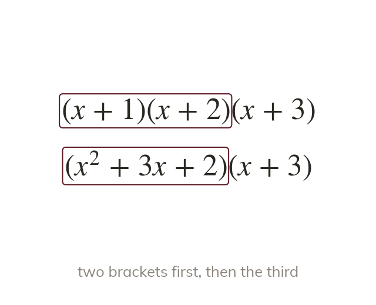
Expanding three brackets, two at a time
Expand two of the three brackets first. Then multiply that answer by the third bracket, term by term.
A product of three brackets like is really two double-bracket expansions in sequence: any two of them expand as a normal double bracket first, and that answer (which now has several terms) is then multiplied by the third bracket, every term of the expanded pair against every term of the remaining bracket. Trying to multiply all three brackets in a single step is where mistakes creep in - always reduce it to two brackets first.
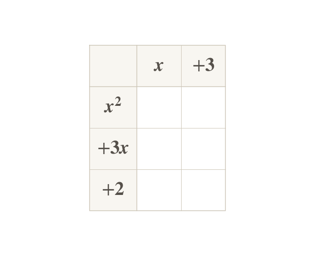
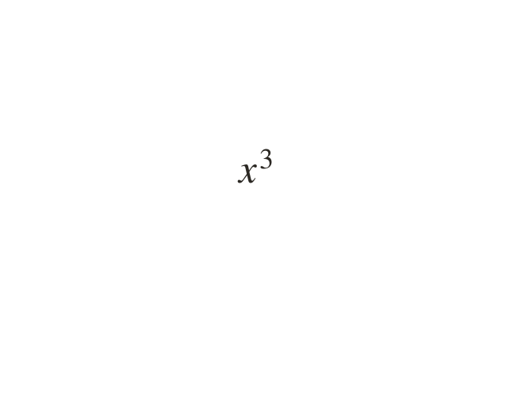
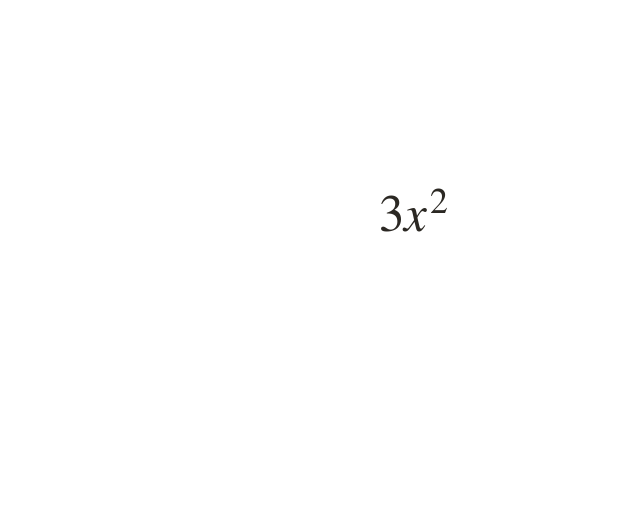
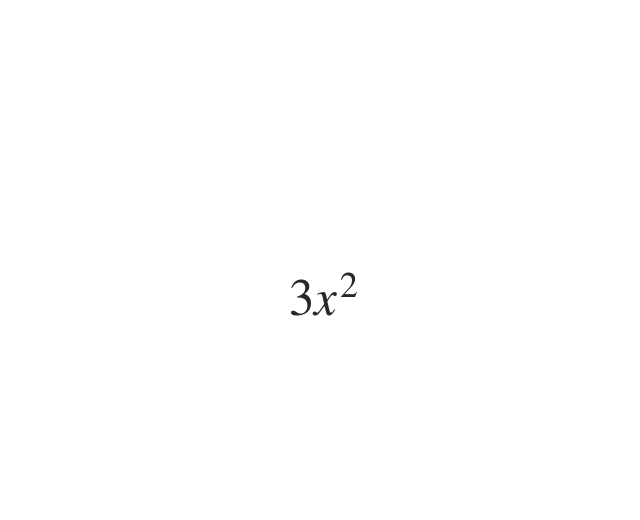
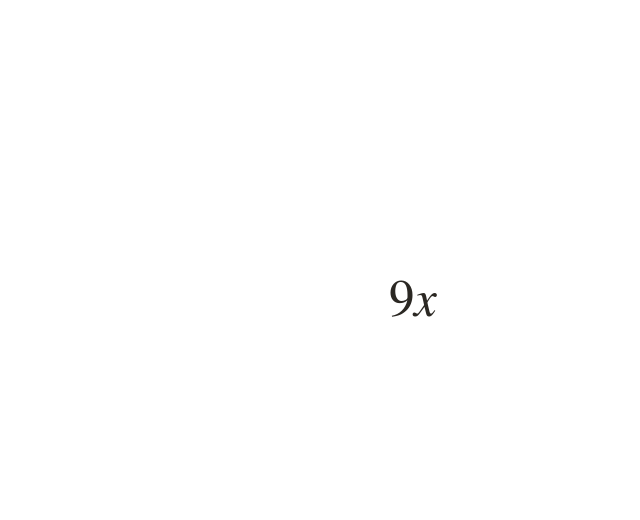
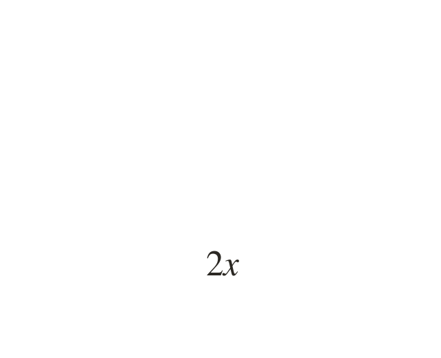
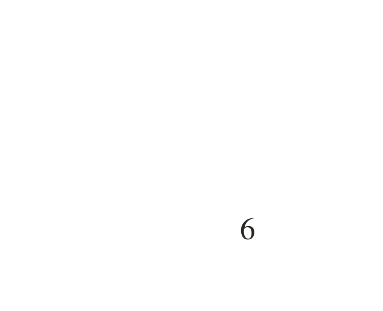
Counting the products
A 3-term expression times a 2-term bracket gives products. e.g. Count the products before and after multiplying.
If the first two brackets expand to an expression with terms (after collecting like terms) and the third bracket has terms, then multiplying them out gives products before simplifying. Counting the expected number of products in advance, and counting them again once the multiplication is done, is a reliable way to check that none has gone missing.
The cube of 𝑎 + 𝑏 in eight blocks
THREE BRACKETS
Expand and simplify
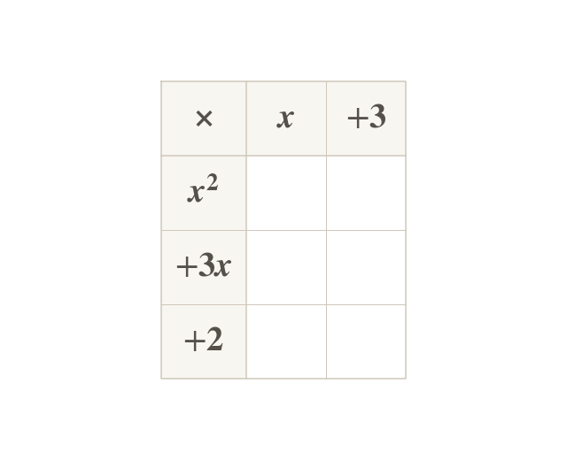
Write the expression
Expand two brackets
Collect x terms
Now multiply by
Read the grid terms times terms, so expect products: ,,
YOUR TURN · a
Expand and simplify
Hint. Follow the worked example: Write the expression → Expand two brackets → Collect x terms → Read the grid
; then times gives
YOUR TURN · b
Expand and simplify
Hint. Follow the worked example: Write the expression → Expand two brackets → Collect x terms → Read the grid
; then times gives
YOUR TURN · c
Expand and simplify
Hint. Follow the worked example: Write the expression → Expand two brackets → Collect x terms → Read the grid
; then times gives
YOUR TURN · d
Expand and simplify One of the three brackets now contains a subtraction, so some of the six products before collecting will be negative - track each sign carefully rather than assuming everything adds.
Hint. Follow the worked example: Write the expression → Expand two brackets → Collect x terms → Read the grid
; then times gives
03
Check your understanding
Pick an answer. If it's wrong, the feedback tells you which mistake it was.
When expanding which is the correct first step?
Not quite. Multiply every term of by the third bracket.
Not quite. Too much at once. Expand two brackets first, then multiply by the third.
Yes. Expand two brackets, then multiply every term by the third.
Not quite. Three brackets give more products. Expand two first, then multiply by the third.
expands to which is then multiplied by Which are the six products, before collecting like terms?
Not quite. terms × terms gives products. You have
Not quite. Expect products. You have : is missing.
Not quite. The powers add.
Yes. terms × terms products:
Expand and simplify
Yes.
Not quite. Collect both terms.
Not quite. is not Then multiply that by
Not quite. Collect both terms.
04
Practise
mark as you go
Checkpoint.Show your teacher before you go on
1.
Expand and simplify
Hint. Follow the worked example: Write the expression → Expand two brackets → Collect x terms → Read the grid
1
Expand and simplify
Hint. Follow the worked example: Write the expression → Expand two brackets → Collect x terms → Read the grid
2
Sam expands and gets What is the mistake? Give the correct answer.
Hint. Follow the worked example: Write the expression → Expand two brackets → Collect x terms → Read the grid
He multiplied only the first terms and the last terms
3
Expand and simplify
Hint. Follow the worked example: Write the expression → Expand two brackets → Collect x terms → Read the grid
4
Expand and simplify
Hint. Follow the worked example: Write the expression → Expand two brackets → Collect x terms → Read the grid
5
Expand and simplify Which two brackets is it quickest to expand first?
Hint. Follow the worked example: Write the expression → Expand two brackets → Collect x terms → Read the grid
first: the difference of two squares
EXT
Expand and simplify
Hint. Follow the worked example: Write the expression → Expand two brackets → Collect x terms → Read the grid
Subtract:
05
Learn
Read each card, then follow the worked examples one step at a time.
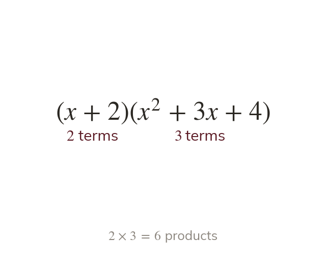
A bracket containing three terms
A bracket may already hold three terms, like Every term still multiplies every term: products.
Sometimes one of the brackets already contains three terms, like rather than three separate two-term brackets. The method is the same as before: every term in the first bracket multiplies every term in the second. Here that's terms × terms products - exactly as many as when three two-term brackets were reduced to a 3-term expression times a 2-term bracket, because a bracket containing three terms behaves exactly like an already-expanded pair, just written out from the start.
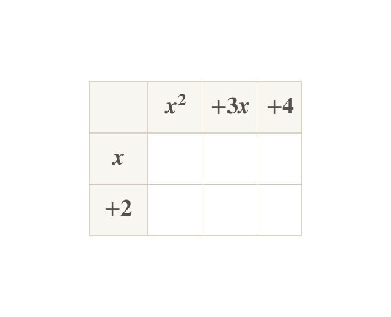
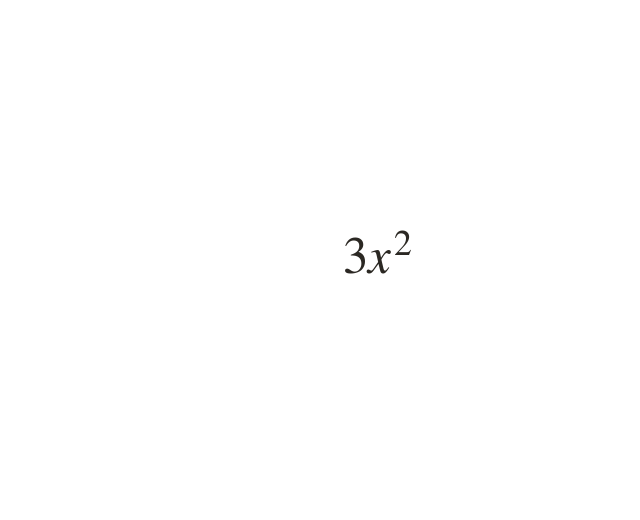
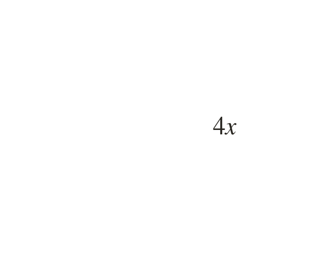
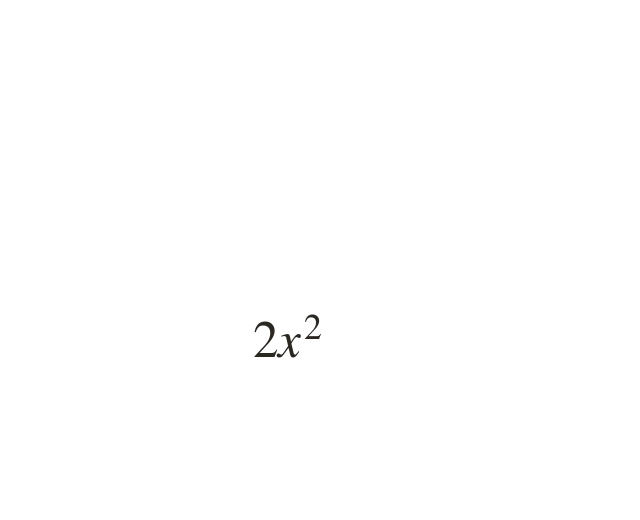
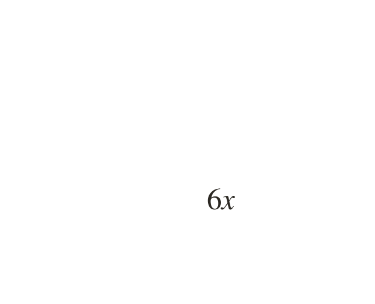
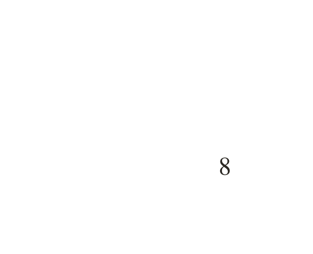
Avoiding the two-term shortcut
First/Outer/Inner/Last only finds four products. A three-term bracket times a two-term bracket needs six. Take each term in turn and multiply it by every term in the other.
It's tempting to expand a three-term bracket the same way as a two-term one, using something like First/Outer/Inner/Last - but that method only accounts for four products, and a three-term bracket multiplied by a two-term one needs six. Go through the first bracket's terms one at a time, multiplying each one by every term of the second bracket in turn, and only move on once all of its terms have been used.
BRACKET TIMES TRINOMIAL
Expand and simplify
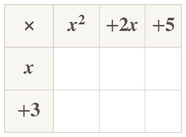
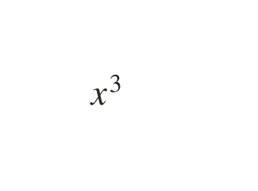
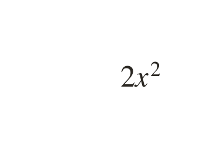
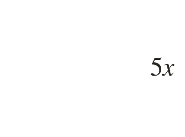
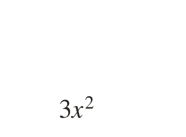
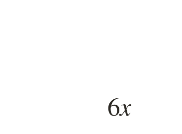
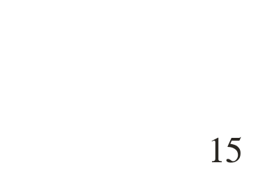
Write the expression
Add the six productsThe grid: multiply by every term in the second bracket then by every term
YOUR TURN · e
Expand and simplify
Hint. Follow the worked example: Write the expression → Add the six products
YOUR TURN · f
Expand and simplify
Hint. Follow the worked example: Write the expression → Add the six products
YOUR TURN · g
Expand and simplify Notice both brackets now contain a subtraction: find each product's sign in turn.
Hint. Follow the worked example: Write the expression → Add the six products
06
Check your understanding
Pick an answer. If it's wrong, the feedback tells you which mistake it was.
Expand and simplify
Not quite. The terms are and so
Yes.
Not quite. Multiply by all three terms, including Expect products.
Not quite. Multiply by the as well: +
Expand and simplify
Yes.
Not quite. not
Not quite. Use all three terms, including the middle Expect products.
Not quite. Multiply by every term: and
is expanded and simplified. How many products must be found before collecting like terms, and what is the correct expanded, simplified answer?
Not quite. not
Not quite. Keep the minus on
Not quite. You skipped the term. A 3-term bracket times a 2-term bracket gives products, not
Yes. products; collecting them gives
07
Practise
mark as you go
Checkpoint.Show your teacher before you go on
1.
Expand and simplify
Hint. Follow the worked example: Write the expression → Add the six products
1
Expand and simplify
Hint. Follow the worked example: Write the expression → Add the six products
2
Ali expands and gets What is the mistake? Give the correct answer.
Hint. Follow the worked example: Write the expression → Add the six products
The must multiply every term, not just be added on
3
Expand and simplify
Hint. Follow the worked example: Write the expression → Add the six products
4
Expand and simplify
Hint. Follow the worked example: Write the expression → Add the six products
5
Expand and simplify What do you notice?
Hint. Follow the worked example: Write the expression → Add the six products
Every middle term cancels
EXT
How many products will give before collecting? Expand and simplify it.
Hint. Follow the worked example: Write the expression → Add the six products
products
08
Exit ticket
On paper, on your own, then check
1
Explain why expanding is done in two stages rather than all at once, and how many products you'd expect in total before simplifying.
There's no direct rule for three brackets at once, so two are expanded first, then the result is expanded against the third; products in total.
2
Expand and simplify
3
Expand and simplify
Finished? Next lesson: 9.7.4 Factorising Fully and Common Brackets.
09
How did it go?
Be honest: it's just for you
For each skill, tap the one that is true for you today. Your Revise pages start with anything you mark Not yet.
Expand triple brackets.
Expand brackets containing three terms.
Your ratings are saved on this device only.
Practise more
After the lesson, or whenever you want more
Dr Frost
Log in, then search for a code to practise that skill.
300aExpand an expression given in the form (x ± a)(x ± b)(x ± c)
299jExpand double brackets with up to three terms in a single bracket.